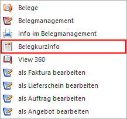
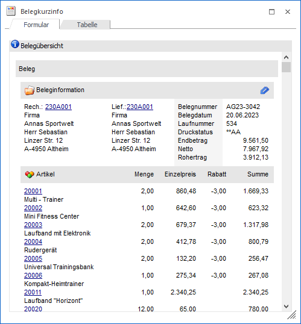
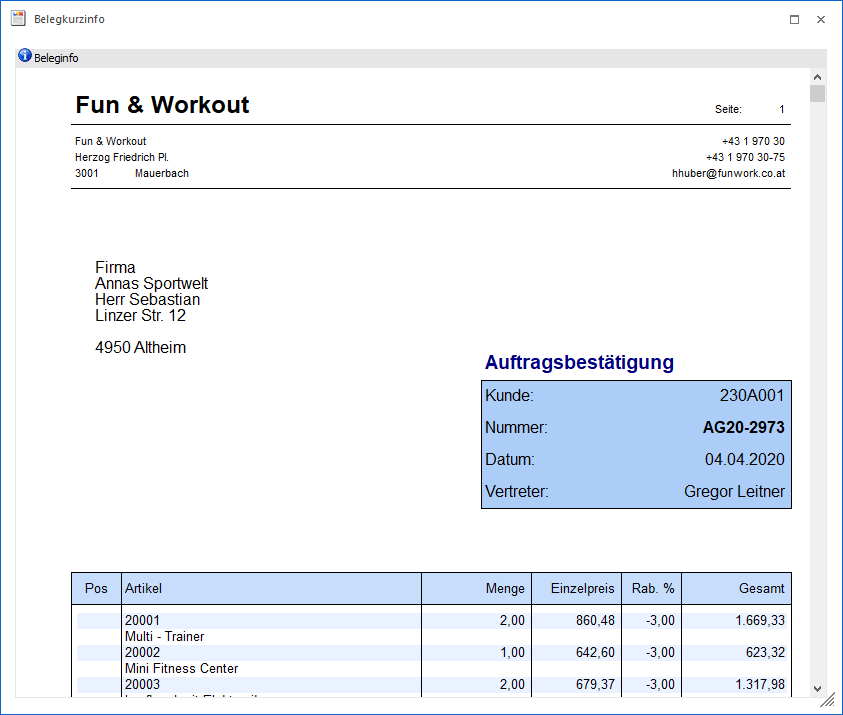
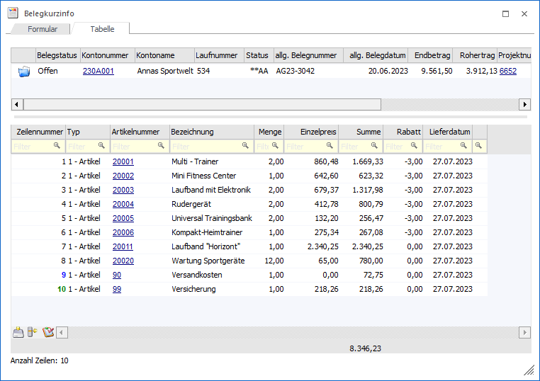
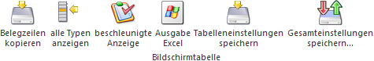
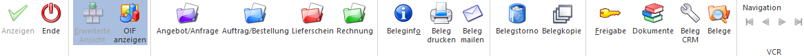

Die Belegkurzinfo stellt alle relevanten Informationen - bezogen auf einen Beleg - bereit. Der Aufruf der Kurzinfo findet über den Beleg-DrillDown statt.

In der Kurzinfo werden 3 Darstellungsformen zur Verfügung gestellt, wobei der Wechsel durch Anwahl der Register bzw. des Buttons "OIF anzeigen" stattfindet.
Register "Formular" - Darstellungsform "Belegübersicht"

In der Belegübersicht des Registers "Formular" werden die wichtigsten Daten des Belegs angezeigt. Die Darstellung erfolgt hierbei über ein sogenanntes "OIF" (Objektorientiertes Info Formular).
Register "Formular" - Darstellungsform "Beleginfo"

In der Darstellungsform "Beleginfo" des Registers "Formular" wird der Beleg als solches angezeigt.
Register "Tabelle" - Darstellungsform "Tabelle"

In dem Register "Tabelle" wird der Beleg in 2 Tabellen aufbereitet:
ü Belegkopf
In der Tabelle
"Belegkopf" werden die Kopfdaten des Belegs angezeigt.
Hinweis
Die in der Tabelle dargestellten Standard-Spalten können über das Kontextmenü der rechten Maustaste (Funktion "Spalten anzeigen / verstecken") jederzeit ergänzt bzw. verändert werden. Die Inhalte z.B. der Spalten "Endbetrag" und "Rohertrag" werden hierbei erst dargestellt, wenn die jeweilige Spalte vor der Beleganzeige im Aufbau vorhanden ist.
ü Belegmitte
In der Tabelle
"Belegmitte" werden die Belegzeilen des Belegs angezeigt. Folgende Punkte sind
hierbei zu beachten:
ü Es werden im Standard nur Belegzeilen des Typs "Artikel", "Text", "Gutschrift" und "Nebenkosten" angezeigt. Diese Einschränkung kann mit Hilfe des Tabellenbuttons "alle Typen anzeigen" aufgehoben werden.
ü Handel es sich um eine Belegzeile, welche als "alternativ" gekennzeichnet ist und somit nicht in die Endsumme einfließt, so wird der Wert der Spalten "Summe" und "Summe (original)" in Dunkelrot dargestellt.
ü Handelt es sich um Belegzeilen des Typs "1 - Artikel", welche nicht in die Endsumme fließend, so wird der Wert der Spalten "Summe" und "Summe (original)" in Rot dargestellt.
ü Durch einen Doppelklick auf die Lagerort-Kugel einer Belegzeile wird das Fenster "Lagerorten anzeigen" geöffnet. In diesem werden die erfassten Lagerorte der Belegzeile dargestellt.
ü Es können Belegzeilen per Drag & Drop in geöffnete Belegerfassungen, sowie in das Bestellvorschlag bearbeiten, kopiert werden.
Hinweis
Die in der Tabelle dargestellten Standard-Spalten können über das Kontextmenü der rechten Maustaste (Funktion "Spalten anzeigen / verstecken") jederzeit ergänzt bzw. verändert werden.
Tabellenbuttons

Ø Belegzeilen kopieren
Durch Anwahl des Buttons "Belegzeilen kopieren" werden die markierten Belegzeilen in den Zwischenspeichern gelegt und stehen in der Belegerfassung, sowie dem Bestellvorschlag bearbeiten, zum Einfügen zur Verfügung (Tabellenbutton "Belegzeilen einfügen").
Ø alle Typen anzeigen
Es werden im Standard nur Belegzeilen des Typs "Artikel", "Text", "Gutschrift" und "Nebenkosten" in der Tabelle "Belegmitte" angezeigt. Diese Einschränkung kann durch Anwahl des Tabellenbuttons "alle Typen anzeigen" aufgehoben werden, wobei durch nochmaliges Anklicken des Buttons die Beschränkung wieder gilt. Hierbei wird die zuletzt getroffene Einstellung benutzerspezifisch gespeichert.
Ø beschleunigte Anzeige
Für eine noch schnellere Aufbereitung der Tabelle "Belegmitte" kann die beschleunigte Anzeige aktiviert werden. Dadurch werden die folgenden Informationen nicht mehr geladen bzw. angezeigt:
ü farbliche Kennzeichnung von Zwischenartikeln
ü Spalte "Lagerort"
ü Spalte "Kontrakt bestellt"
ü Spalte "Kontrakt geliefert"
ü Spalte "Kontrakt geliefert"
ü Spalte "Kontrakt fakturiert
ü Spalte "Kontraktstatus"
Ø Ausgabe Excel
Durch Anwahl des Buttons "Ausgabe Excel" wird der Inhalt der Tabelle an Microsoft Excel übergeben.
Ø Tabelleneinstellungen speichern
Die Spalten einer Tabelle können grundsätzlich an beliebige Positionen verschoben, bzw. in der Breite entsprechend angepasst werden. Durch Anwahl des Buttons "Tabelleneinstellungen speichern" werden die Einstellungen benutzerspezifisch gespeichert und bei dem nächsten Aufruf des Programmpunktes wieder vorgeschlagen.
Ø Gesamteinstellungen speichern
Im Gegensatz zu "Tabelleneinstellungen speichern" können mit "Gesamteinstellungen speichern" mehrere Tabellenaufbauten gespeichert und nach Wunsch geladen werden. Zusätzlich werden Sonderfunktionen der Tabelle (z.B. "Spalte gruppieren") ebenfalls bei der Speicherung bedacht.
Buttons

Ø Anzeigen (nur im Register "Tabelle" anwählbar)
Durch Anwahl des Buttons "Anzeigen" bzw. der Taste F5 wird die Beleganzeige aktualisiert.
Ø Ende
Mit Hilfe des Buttons "Ende" bzw. der Taste ESC wird das Fenster geschlossen.
Ø Erweiterte Anzeige (nur in Register "Tabelle" anwählbar)
Für eine optimierte Darstellung des Belegs können durch Aktivieren dieses Buttons Informationen, welche innerhalb des Belegs nicht vorliegen, für die Anzeige hinzugeladen werden (z.B. der Name der Belegart).
Ø OIF anzeigen (nur im Register "Formular" anwählbar)
Durch Anwahl des Buttons "OIF anzeigen" wird in der Belegkurzinfo zwischen den Darstellungsformen "Belegübersicht" und "Beleginfo" gewechselt, wobei die Speicherung der Auswahl benutzerspezifisch erfolgt.
Ø Angebot / Anfrage
Durch Anwahl des Buttons "Angebot / Anfrage" kann ein offenes Angebot bzw. eine offene Anfrage bearbeitet werden.
Ø Auftrag / Bestellung
Durch Anwahl des Buttons "Auftrag / Bestellung" kann ein offener Auftrag bzw. eine offene Bestellung bearbeitet oder ein offenes Angebot bzw. eine offene Anfrage die Belegstufe "Auftrag / Bestellung" übernommen werden.
Ø Lieferschein
Durch Anwahl des Buttons "Lieferschein" kann ein offener Lieferschein bearbeitet oder ein offenes Angebot (Anfrage) / offener Auftrag (Bestellung) in die Belegstufe "Lieferschein" übernommen werden.
Ø Rechnung
Durch Anwahl des Buttons "Rechnung" kann eine noch nicht gebuchte Rechnung bearbeitet oder ein offenes Angebot (Anfrage) / offener Auftrag (Bestellung) / offener Lieferschein in die Belegstufe "Lieferschein" übernommen werden.
Ø Beleginfo
Der Beleg der Kurzinfo wird am Bildschirm dargestellt. Hierbei ist das Verhalten abhängig von der Definition der FAKT-Parameter (WinLine START - Applikationsparameter - FAKT-Parameter - Belege - Belegarchivierung - Option "Archivbeleg bei der Beleginfo verwenden" -> standardmäßig aktiviert).
ü Button "Beleginfo" bzw.
Doppelklick auf den Beleg
Es wird das letzte Druckbild vom Beleg aus dem
Autoarchiv am Bildschirm dargestellt.
ü Button "Beleginfo" + STRG-Taste
bzw. Doppelklick + STRG-Taste auf den Beleg
Es wird die "Archiv - Vorschau"
geöffnet und dort das letzte Druckbild vom Beleg aus dem Autoarchiv
dargestellt.
Hinweis
Wenn gemäß den Applikationsparametern der WinLine FAKT für das Autoarchiv mehrere Versionen gespeichert werden sollen (WinLine START - Applikationsparameter - FAKT-Parameter - Belege - Belegarchivierung - Anzahl der Versionen pro Belegstufe) und der Beleg bereits mehrfach gedruckt wurde, dann steht die Buttons "ältere Version" bzw. "jüngere Version" zur Verfügung. Über diese kann eine andere Druckversion ausgewählt werden.
ü Button "Beleginfo" + SHIFT-Taste
bzw. Doppelklick + SHIFT-Taste auf den Beleg
Der Beleg wird neu gerechnet und
am Bildschirm dargestellt.
Ø Belegdruck
Der Beleg wird auf dem Drucker bzw. Spooler ausgegeben. Für das Autoarchiv wird hierbei kein neuer Eintrag erzeugt.
Ø Beleg mailen
Durch Anwahl dieses Buttons wird - in Abhängigkeit der Anzeige - die Belegübersicht (der Beleg) oder die Beleginfo (das OIF) gemailt.
Ø Belegstorno
Der bestehende Beleg kann gelöscht bzw. mit Hilfe des Fensters "Beleg stornieren" oder "Kontrakte löschen" storniert werden.
Ø Belegkopie
Der bestehende Beleg kann mit Hilfe des Fensters "Beleg kopieren" auf einen anderen Kunden bzw. Lieferanten dupliziert werden.
Hinweis
Wird bei der Belegkopie die Belegumstellung nicht geöffnet, so wird der neue Beleg immer als "nicht gerechnet / gedruckt" gekennzeichnet.
Ø Freigabe
Falls für einen Beleg eine Freigabe erforderlich ist, kann diese durch diesen Button erfolgen bzw. geändert werden.
Ø Dokumente
Durch Anwahl dieses Buttons können die Archivdokumente des Belegs angezeigt werden.
Hinweis
An folgenden Stellen können Archivdokumenten einem Beleg hinzugefügt werden:
ü Belegerfassung => Drag & Drop im Belegkopf
ü Belegmanagement => rechte Maustaste (Funktion "Dokumente zu Beleg hinzufügen") oder Drag & Drop
ü Belege / Belege - Matchcode => rechte Maustaste (Funktion "Dokumente zu Beleg hinzufügen") oder Drag & Drop
ü Belegkurzinfo => Drag & Drop
ü Batchbeleg => Dokumentenangabe per Spalte "DokumentenID"
Ø Beleg CRM
Mit Hilfe des Buttons "Beleg CRM" kann in das Fenster "Belege - CRM-Ansicht" gewechselt werden. Dort ist es möglich bestehende CRM-Fälle des Belegs zu betrachten, neue Fälle zu erfassen oder bestehende Fälle mit dem Beleg zu verknüpfen bzw. die Verknüpfungen zu entfernen.
Ø Belege
Durch Anwahl dieses Buttons wird das Programm "Belege" geöffnet und der aktuelle Beleg anzeigt.
Ø VCR-Buttons (nur im Register "Formular" anwählbar)
Sollte die Anzeige der Beleginfo über mehrere Seiten erfolgen, so dann kann mit Hilfe der VCR-Buttons zwischen den einzelnen Seiten gewechselt werden.
ü Damit kann auf die erste Seite gewechselt werden.
ü  Damit kann
auf die vorherige Seite gewechselt werden.
Damit kann
auf die vorherige Seite gewechselt werden.
ü  Damit kann
auf die nächste Seite gewechselt werden.
Damit kann
auf die nächste Seite gewechselt werden.
ü  Damit kann
auf die letzte Seite gewechselt werden.
Damit kann
auf die letzte Seite gewechselt werden.